For Homework 8, I built a self-contained AWS deployment in Terraform instead of extending an older repo directly. The stack provisions the infrastructure needed to host a MySQL-backed shopping cart API end to end:
db.t3.microThe RDS instance is placed in private database subnets and protected by a security group that
allows MySQL traffic on port 3306 only from the ECS task security group. For assignment cleanup,
I configured:
skip_final_snapshot = truedeletion_protection = falseAfter deployment, Terraform reported these relevant outputs:
alb_dns_name = "hw8-alb-1812492547.us-west-2.elb.amazonaws.com"db_endpoint = "hw8-mysql.coihifioksep.us-west-2.rds.amazonaws.com"db_name = "shopping_cart"db_port = 3306ecs_cluster_name = "hw8-cluster"ecs_service_name = "hw8-service"Deployment evidence:
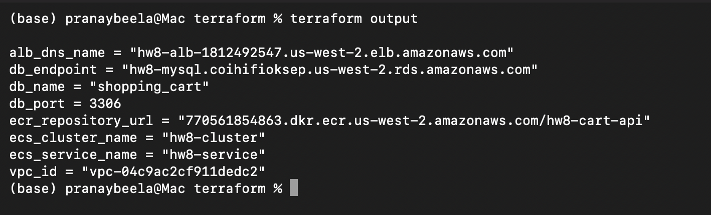
I designed a normalized relational schema with two tables: carts and cart_items.
carts
cart_id as BIGINT UNSIGNED AUTO_INCREMENT PRIMARY KEYcustomer_idstatuscreated_atupdated_atcart_items
cart_item_id as BIGINT UNSIGNED AUTO_INCREMENT PRIMARY KEYcart_idproduct_idquantitycreated_atupdated_atThis structure matches the API access pattern in api.yaml very naturally:
Keeping the header and items separate also avoids embedding cart contents into one large JSON column, which would make partial updates and constraints weaker.
cart_id is the primary key for cartscart_item_id is the primary key for cart_itemscart_items.cart_id is a foreign key to carts.cart_idON DELETE CASCADE ensures item rows are removed automatically if a cart is deletedUNIQUE (cart_id, product_id) prevents duplicate product rows in the same cartCHECK (quantity > 0) enforces valid quantitiesI added:
idx_carts_customer_id on carts.customer_ididx_carts_customer_updated on (customer_id, updated_at DESC)uq_cart_items_cart_product on (cart_id, product_id)These indexes support the required access patterns:
For concurrent cart updates, I relied on InnoDB row-level locking and a transaction-based write pattern:
ON DUPLICATE KEY UPDATEThis allows different carts to be updated independently while also safely serializing concurrent
writes to the same (cart_id, product_id) pair.
AUTO_INCREMENT cart IDs are simple and work well for the assignment.I implemented the required MySQL-backed endpoints in Go using net/http and database/sql with
the MySQL driver:
POST /shopping-cartsGET /shopping-carts/{id}POST /shopping-carts/{id}/itemsGET /healthThe service reads its database settings from ECS environment variables:
DB_HOSTDB_PORTDB_NAMEDB_USERDB_PASSWORDConnection pooling is configured explicitly:
MaxOpenConns = 25MaxIdleConns = 10ConnMaxLifetime = 5mConnMaxIdleTime = 2mOn startup, the application:
CREATE TABLE IF NOT EXISTS for both cart tablesPOST /shopping-carts
cartsitemsGET /shopping-carts/{id}
LEFT JOIN from carts to cart_itemsPOST /shopping-carts/{id}/items
404 if the cart does not existON DUPLICATE KEY UPDATEIn the current implementation, posting the same product to the same cart again increments the stored quantity.
After deployment, the API returned the expected responses:
GET /health returned 200 OK with:{"status":"ok","db_host":"hw8-mysql.coihifioksep.us-west-2.rds.amazonaws.com"}POST /shopping-carts returned 201 CreatedPOST /shopping-carts/1/items returned 204 No ContentGET /shopping-carts/1 returned 200 OK and included:customer_id = 101status = "active"items = [{"product_id":555,"quantity":2}]API evidence:
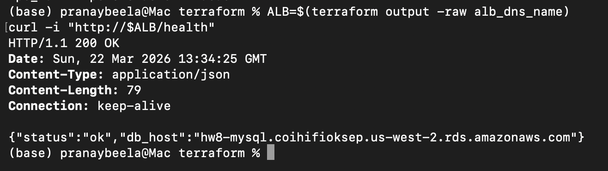
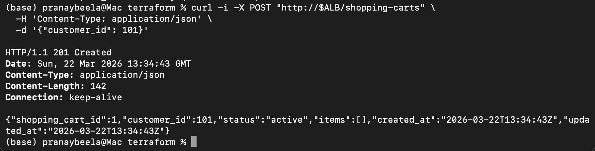
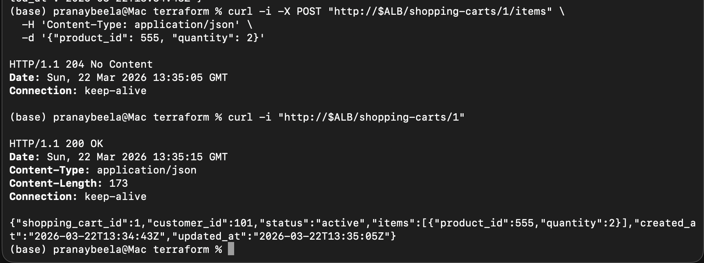
I hit several real implementation issues during this step:
go.mod but not go.sum, so the MySQL
driver dependency could not be resolved inside Docker.LabRole, so I changed the ECS task definition to use LabRole.503 Service Temporarily Unavailable because the ECS target was not
healthy yet. After the task stabilized and connected to the database successfully, the health
endpoint returned 200 OK.LEFT JOIN cart retrieval query and the upsert-based item write pattern were both simple and
a good fit for the schema.I ran the required 150-operation MySQL test and saved the results to mysql_test_results.json.
POST /shopping-cartsPOST /shopping-carts/{id}/itemsGET /shopping-carts/{id}150mysql_test_results.jsonThe run started at 2026-03-22T13:39:14Z and ended at 2026-03-22T13:39:47Z, so the full test
completed in about 33 seconds, well within the 5-minute limit.
Overall:
150100%221.40 ms210.58 ms302.78 ms320.72 msBy operation:
| Operation | Count | Avg (ms) | P50 (ms) | P95 (ms) | P99 (ms) | Success |
|---|---|---|---|---|---|---|
| CREATE_CART | 50 | 219.93 | 210.21 | 296.62 | 367.25 | 50/50 |
| ADD_ITEMS | 50 | 226.18 | 212.84 | 303.67 | 308.57 | 50/50 |
| GET_CART | 50 | 218.07 | 209.40 | 301.52 | 318.87 | 50/50 |
ADD_ITEMS was the slowest operation on average, which makes sense because it performs a
transaction and touches both the parent cart row and the unique (cart_id, product_id) item row.GET_CART was not dramatically faster than writes, suggesting that network and load balancer
overhead contributed significantly to total latency in this setup.At this stage, I did not need a major SQL rewrite to complete the 150-operation test successfully. The important optimizations were structural:
The test results are strong enough to support the MySQL sections of the later comparison work in Step III.
Compared with the Week 5 product service, the MySQL-backed Homework 8 service is clearly more operationally complex. In Week 5, the API used an in-memory map and avoided database round trips entirely. The Week 5 analysis reported:
70-77 RPSHttpUser median latency around 80-100 msHttpUser p95 around 160 msHttpUser p99 under 200 msBy contrast, the Homework 8 MySQL test averaged 221.40 ms across the 150 required operations,
with p95 = 302.78 ms and p99 = 320.72 ms.
This difference is consistent with the architecture change:
The trade-off is that Homework 8 pays extra latency and infrastructure complexity, but gains persistence, shared state across tasks, and relational integrity. The two workloads are not perfectly identical, so the comparison should be treated as directional rather than strictly apples-to-apples, but it still shows the expected cost of moving from in-memory state to durable storage.
The most surprising part of this step was that the application logic was simpler than the infrastructure integration. The cart schema, join query, and upsert logic all fit the API requirements cleanly, but getting Docker, ECS, RDS, IAM, and Terraform dependencies aligned took more iteration than the SQL itself.
Another useful observation was how similar the response times were across create, add-item, and get-cart requests. I expected reads to be noticeably faster than writes, but in this deployed setup the differences were small:
CREATE_CART avg: 219.93 msADD_ITEMS avg: 226.18 msGET_CART avg: 218.07 msThat suggests the end-to-end request path through the ALB, ECS task, and RDS network round trip contributed a large share of total latency.
Several parts of the first attempt did not work cleanly:
go.sum in the image build context.LabRole.503 because the ECS target was not healthy yet.These were all fixable, but they were good reminders that deployment details can block progress even when the application code itself is correct.
To make the 150-operation test reliable, I focused on a few practical optimizations:
LEFT JOIN for full-cart retrievalON DUPLICATE KEY UPDATEI did not need to rewrite the schema after testing, but I did improve the infrastructure and image build setup so the application could start consistently and stay healthy behind the ALB.
If I were doing this again, I would:
503 appearedOverall, this step made the trade-off very clear: moving from in-memory state to MySQL gives durability, shared state across tasks, and relational guarantees, but it also introduces more operational complexity than the Week 5 in-memory version.
I reviewed CloudWatch metrics for the MySQL test window from 2026-03-22T13:35:00Z to
2026-03-22T13:45:00Z, which covers the successful 150-operation test run.
AWS/RDS for DBInstanceIdentifier = hw8-mysql
RDS metric screenshots:
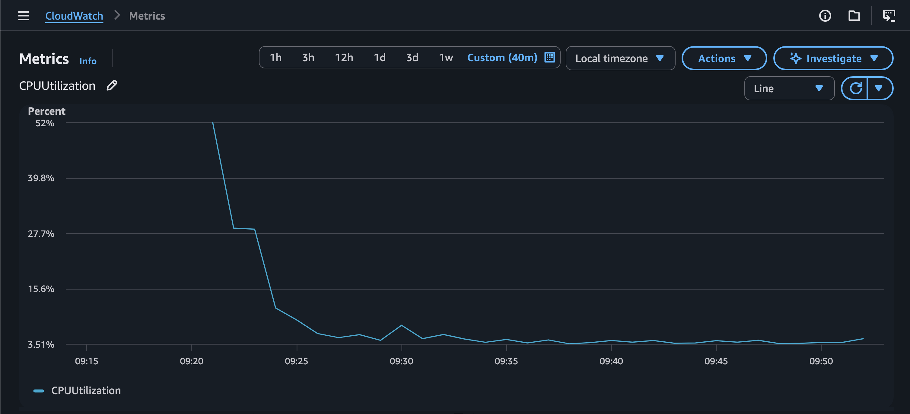
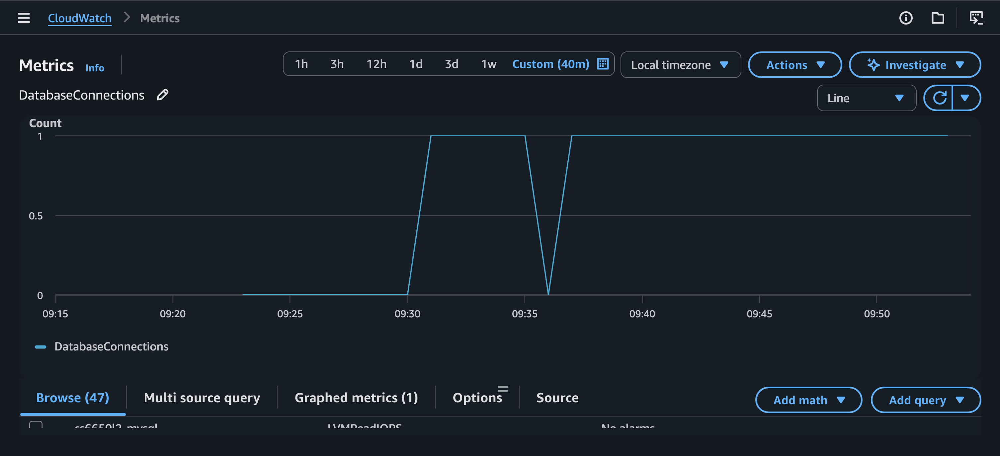
CPUUtilization3.94%4.46%DatabaseConnections1 active connection during the test window1ReadIOPS0.281.30WriteIOPS1.449.58These metrics show that the db.t3.micro instance handled the required workload comfortably. CPU
stayed low, connection count stayed flat, and write activity was more noticeable than read activity,
which matches the test mix of cart creation and item insertion.
AWS/ECS for ClusterName = hw8-cluster and ServiceName = hw8-service
ECS metric screenshot:
CPUUtilization0.15%1.93%MemoryUtilization4.21%4.30%The ECS service stayed lightly loaded during the sequential test. CPU and memory both remained far below the task limits, which suggests the service had substantial headroom for this assignment-scale workload.
For Step II Part 1, I extended the same hw8 Terraform stack to provision DynamoDB alongside
MySQL so both backends can coexist for later comparison. The DynamoDB infrastructure uses a single
table intended for the shopping cart workload.
I chose a single DynamoDB table with:
cart_id (String)PAY_PER_REQUESTThe corresponding Terraform output is exposed as:
dynamodb_table_name = "hw8-shopping-carts"Step II infrastructure evidence:
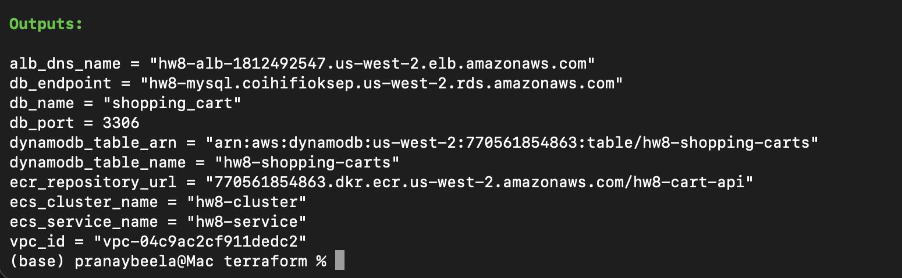
Shopping carts are a good fit for DynamoDB because the access pattern is narrow and centered on a single cart:
There is no strong need for multi-table joins, and the main lookup key is naturally the cart ID.
I chose cart_id as the partition key because:
I did not add a sort key because the Step II access patterns do not require ordered sub-items or range queries under one cart key.
Unlike the MySQL model, where items live in a separate cart_items table, the DynamoDB design is
document-oriented. Each cart will store its items as an embedded list inside the cart document, for
example:
{
"cart_id": "42",
"customer_id": 1001,
"status": "active",
"items": [
{"product_id": 2001, "quantity": 3},
{"product_id": 2002, "quantity": 1}
],
"created_at": "2026-03-22T13:00:00Z",
"updated_at": "2026-03-22T13:05:00Z"
}
This is a better fit for DynamoDB because the most common read is "get the whole cart" rather than "query child rows separately and join them later."
I intentionally did not add GSIs in Part 1. The required Step II operations do not need them, and avoiding unnecessary indexes keeps the design simpler and cheaper.
I chose PAY_PER_REQUEST rather than provisioned capacity so the homework test can run without
manual read/write capacity planning. This reduces the risk of throttling caused by underestimating
load and makes the table easier to compare with MySQL at assignment scale.
Compared to the Step I MySQL design:
For Step II Part 2, I kept the same shopping cart HTTP API but added a DynamoDB-backed store behind the handlers. The application now supports backend selection through environment configuration, so the same container and the same ALB path structure can run either:
DB_TYPE = "mysql"DB_TYPE = "dynamodb"This keeps the comparison fair because the HTTP layer stays the same while only the data layer changes.
The Go service now uses a shared CartStore interface with two implementations:
mysqlCartStoredynamoCartStoreThe DynamoDB implementation uses:
PutItem to create a new cart documentGetItem to retrieve a cart by partition keyUpdateItem to update embedded cart itemsTo keep cart IDs compatible with the existing API shape, I used a counter item in the same table.
The special item with partition key __counter__ is updated with DynamoDB's ADD operation to
produce the next sequential cart ID.
The DynamoDB cart document stores:
cart_idcustomer_idstatusitemscreated_atupdated_atItem updates follow a document-style read/modify/write flow:
cart_iditems listUpdateItemThis is different from the MySQL ON DUPLICATE KEY UPDATE approach, but it matches the
single-document DynamoDB model chosen in Part 1.
After switching the deployed service to store_backend = "dynamodb", Terraform reported the
expected table outputs:
dynamodb_table_name = "hw8-shopping-carts"dynamodb_table_arn = "arn:aws:dynamodb:us-west-2:770561854863:table/hw8-shopping-carts"Deployment evidence:
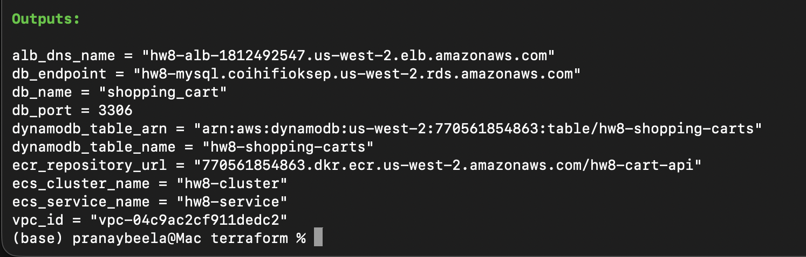
The health endpoint confirmed that the running service was using DynamoDB:
GET /health returned 200 OK{"status":"ok","backend":"dynamodb","table":"hw8-shopping-carts"}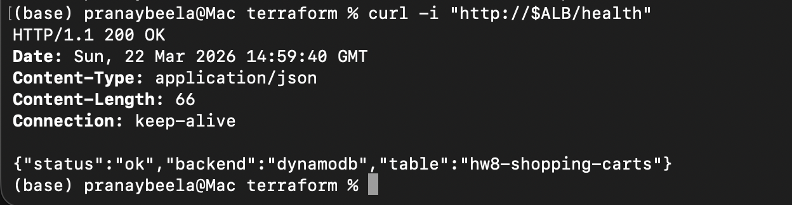
The shopping cart API also worked end to end on the DynamoDB backend:
POST /shopping-carts returned 201 CreatedPOST /shopping-carts/1/items returned 204 No ContentGET /shopping-carts/1 returned 200 OKReturned cart evidence:
shopping_cart_id = 1customer_id = 201status = "active"items = [{"product_id":777,"quantity":3}]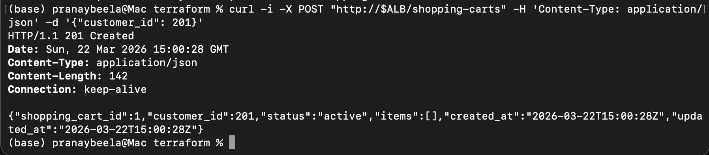
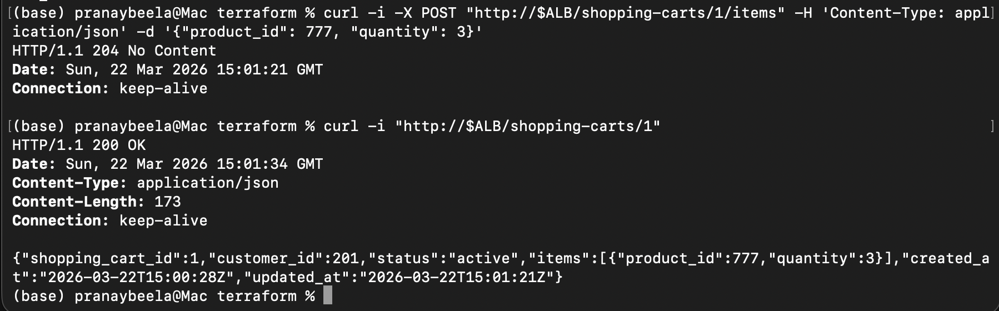
For Step II Part 3, I ran a focused consistency investigation against the live DynamoDB-backed
deployment and saved the raw results to dynamodb_consistency_results.json. The goal was to
separate two different behaviors:
I used three scenarios that match the assignment prompt:
The test harness for this investigation is in scripts/dynamodb_consistency_test.py.
For the single-writer scenarios, I did not observe visible eventual consistency delays during this test run:
0Measured first-read timings were:
218.49 ms305.72 ms234.58 ms298.02 msThese timings mainly reflect end-to-end API latency, because every successful verification happened on the first read attempt. In other words, during this investigation I did not catch a case where the cart write succeeded but the immediate follow-up read returned stale data.
The rapid-update scenario exposed a more important issue than eventual read delay. I ran 5 rounds where 8 concurrent clients each attempted to add a different item to the same cart.
Results:
204 No Content5/5This means the main consistency risk in the current DynamoDB implementation is not simple read-after-write delay. Instead, it is the application's read/modify/write update pattern:
When several clients do that at once, later writes can overwrite earlier ones. This is effectively a lost-update problem.
The patterns most affected were:
The patterns that behaved well were:
Based on this investigation, the best application responses would be:
ConsistentRead when a follow-up read must reflect the latest write immediatelyitems list on every update when many concurrent writers are expectedThe most interesting takeaway was that DynamoDB's eventual consistency model was less visible in my single-writer tests than I expected, but the document-style update strategy introduced a stronger concurrency risk. That is an important contrast with the MySQL version, where row-level updates and transaction semantics made same-cart concurrent modification safer by default.
For Step II Part 4, I ran the exact same 150-operation test used for the MySQL implementation so the later comparison will be valid:
POST /shopping-cartsPOST /shopping-carts/{id}/itemsGET /shopping-carts/{id}I reused the same load-test methodology and JSON result shape, and saved the DynamoDB run to
dynamodb_test_results.json.
150150201: 50204: 50200: 50This confirms the DynamoDB-backed API completed the required identical test without functional errors.
Overall latency:
232.32 ms213.93 ms310.23 ms358.47 msPer-operation averages:
create_cart: 248.65 msadd_items: 237.08 msget_cart: 211.24 msPer-operation p95 values:
create_cart: 328.59 msadd_items: 311.43 msget_cart: 221.23 msThe DynamoDB results file now matches the assignment's comparison prerequisites:
mysql_test_results.jsonThat means both required backend result files now exist and are ready for Step III:
mysql_test_results.jsondynamodb_test_results.jsonThe biggest surprise was that eventual consistency was not the most visible issue in the simple single-writer tests. In the create-then-get and add-then-get scenarios, every immediate follow-up read succeeded on the first attempt during my investigation run. What showed up more clearly was a concurrency problem in the application logic: when several clients updated the same cart at once, the read/modify/write pattern caused lost updates even though all requests returned success.
Another difference from MySQL was how much more of the data-shaping logic moved into the
application. In the MySQL version, the schema, unique key, and ON DUPLICATE KEY UPDATE pattern
handled more of the write semantics directly in the database. In DynamoDB, I had to think more
explicitly about item structure, counter generation, and concurrent-write behavior.
My initial and final partition key choice was cart_id, and after testing I kept that design. It
matched the three required access patterns well:
I did not see evidence of hot partition problems during the assignment-scale tests. The workload spread across many cart IDs, and the 150-operation test plus consistency probe both completed without throttling symptoms.
The part I would change in a later iteration is not the partition key, but the update strategy. I validated the current design by:
That validation showed the table design itself was acceptable for the homework access pattern, but the current same-cart update method should be strengthened with conditional writes, optimistic locking, or a more granular item model if concurrent writers are expected.
For Step II Part 6, I reviewed DynamoDB CloudWatch metrics during the live DynamoDB test window. The main metrics captured were:
ConsumedReadCapacityUnitsConsumedWriteCapacityUnitsSuccessfulRequestLatencyThe read-capacity graph stayed low overall, with short spikes up to about 0.48 consumed units.
That fits the workload because the test used a moderate number of point reads by cart ID rather
than wide scans or repeated multi-item queries.
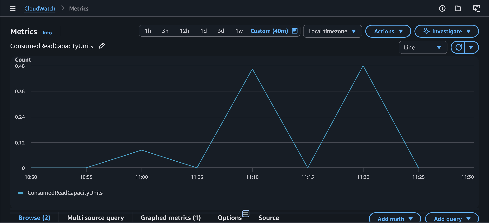
The write-capacity graph was also modest, peaking around 0.97 consumed units. That was expected
because the workload included cart creation plus item updates, and the table was configured with
PAY_PER_REQUEST, so there was no manual capacity tuning needed during the test.

The latency graph showed that DynamoDB service-side operation latency stayed in a low millisecond
range. GetItem appeared highest early in the captured window, UpdateItem was below that, and
PutItem remained the lowest of the three. Even though end-to-end API latency was higher once ALB,
ECS, and application processing were included, the underlying DynamoDB operation latency itself
looked stable.
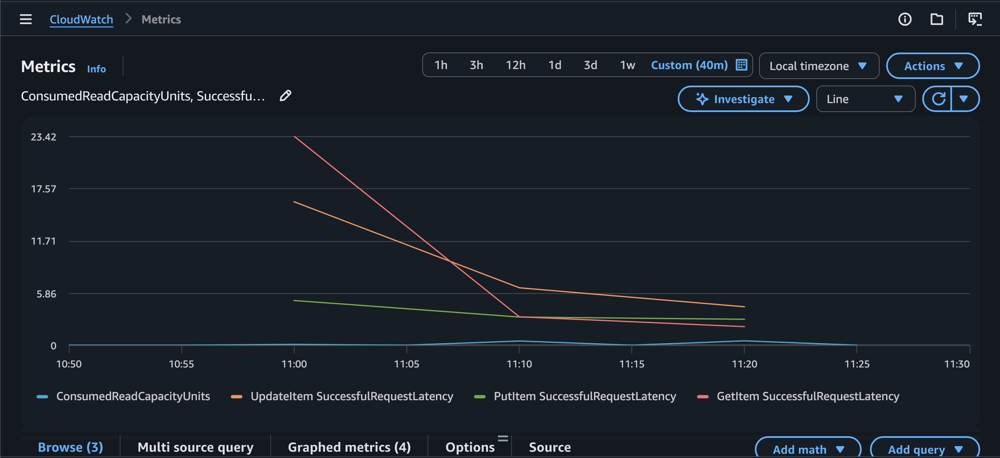
ThrottledRequests metric in the metric set I captured, but the API
tests completed without throttling-like failures.Before comparison, I verified that both backend result files met the assignment requirement:
mysql_test_results.json: 150 operationsdynamodb_test_results.json: 150 operationscombined_results.json: 300 merged records totalEach backend contributed:
50 create_cart50 add_items50 get_cartI created combined_results.json by merging both datasets and tagging each record with its source
database. This file is the single source used for all Step III comparisons.
Verification screenshot:
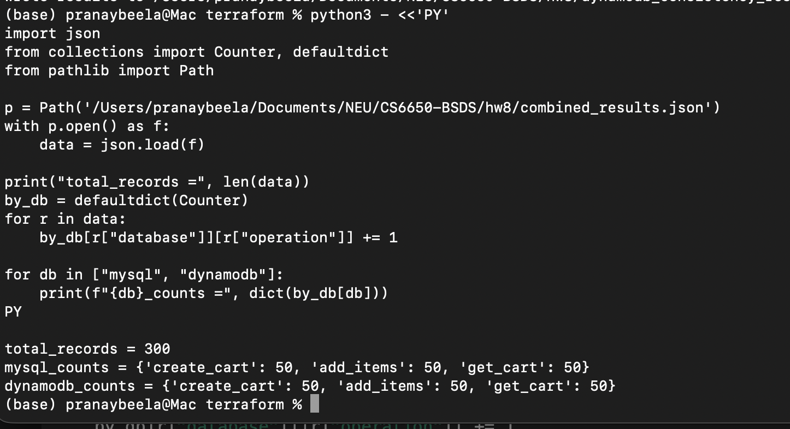
Using combined_results.json, the overall comparison is:
| Metric | MySQL | DynamoDB | Winner | Margin |
|---|---|---|---|---|
| Avg Response Time (ms) | 221.40 | 232.32 | MySQL | 10.92 ms |
| P50 Response Time (ms) | 210.58 | 213.93 | MySQL | 3.35 ms |
| P95 Response Time (ms) | 302.78 | 310.23 | MySQL | 7.45 ms |
| P99 Response Time (ms) | 320.72 | 358.47 | MySQL | 37.75 ms |
| Success Rate (%) | 100.00 | 100.00 | Tie | 0.00 |
| Total Operations | 150 | 150 | Tie | 0 |
| Operation | MySQL Avg (ms) | DynamoDB Avg (ms) | Faster By |
|---|---|---|---|
| CREATE_CART | 219.93 | 248.65 | MySQL by 28.72 ms |
| ADD_ITEMS | 226.18 | 237.08 | MySQL by 10.90 ms |
| GET_CART | 218.07 | 211.24 | DynamoDB by 6.83 ms |
The practical consistency difference was not just "ACID vs eventual consistency" in the abstract. In my actual testing:
So the most important observed impact on user experience was:
If I were shipping this exact implementation to users, MySQL would give stronger default protection for carts that might be edited from multiple tabs, devices, or services at once.
MySQL and DynamoDB both handled the assignment-scale test comfortably, but they consumed resources in very different ways.
For MySQL:
3.94% and peaking around 4.46%.DatabaseConnections stayed around 1, which shows the connection pool reused a small number of
connections effectively.For DynamoDB:
ConsumedReadCapacityUnits stayed low, peaking around 0.48.ConsumedWriteCapacityUnits stayed low, peaking around 0.97.The implementation experience made the trade-off clear:
PAY_PER_REQUEST avoided
manual throughput planning for this homework scale.From an operational perspective:
For bursty traffic, DynamoDB looks easier to scale operationally. For workloads where update correctness and relational guarantees matter more than elasticity, MySQL looks safer.
Recommendation: MySQL
Key Evidence: MySQL was faster overall in my tests (221.40 ms vs 232.32 ms) and safer for
concurrent cart updates in the implementation I built. For a small MVP, the simpler relational
correctness model matters more than the small infrastructure overhead, especially when one developer
needs behavior that is easy to reason about.
Recommendation: MySQL
Key Evidence: MySQL won average, p50, p95, and p99 response time, and it fits feature expansion better because growing businesses usually need more reporting, relational queries, and stronger write guarantees. The normalized two-table design also maps cleanly to later analytics or order integration work.
Recommendation: DynamoDB
Key Evidence: Even though DynamoDB was slightly slower overall in my test, it removed database
connection management and used PAY_PER_REQUEST with low consumed capacity during the homework
load. For sudden spikes, the managed scaling model is more attractive than protecting a single RDS
instance, as long as the cart update pattern is redesigned to avoid lost updates.
Recommendation: DynamoDB
Key Evidence: My direct tests did not cover multi-region deployment, but the DynamoDB patterns I implemented point more naturally toward globally distributed, always-on workloads than the small single-region MySQL setup used here. I would only choose DynamoDB here after fixing the concurrent update design with conditional writes or version checks.
For this assignment's shopping cart implementation, I would choose MySQL.
10.92 ms on average, 7.45 ms at p95, and 37.75 ms at p99I would choose DynamoDB instead when:
The most surprising result was that DynamoDB was not the clear performance winner. It only beat
MySQL on GET_CART, while MySQL won the overall average and tail-latency comparisons. Another
surprise was that eventual consistency itself was not the most visible runtime issue; the bigger
problem was lost updates caused by document-style rewrites under concurrency.
Several things failed during the implementation process:
go.sum was not copied into the image build contextLabRole503 until the ECS task became healthyThese failures were useful because they separated infrastructure issues from application logic issues.
I would definitely choose MySQL when I want strong write guarantees, relational modeling, and default-safe behavior for shopping-cart style updates. I would definitely choose DynamoDB when the traffic pattern is mostly key-based, scaling pressure is high, and I am willing to design the write path carefully around DynamoDB's strengths.
What I would tell another student starting this assignment is:
Hands-on implementation changed my understanding because it showed that database choice is not just about average latency. Correctness under concurrent writes, operational model, and application data shape all mattered at least as much as the raw response-time numbers.